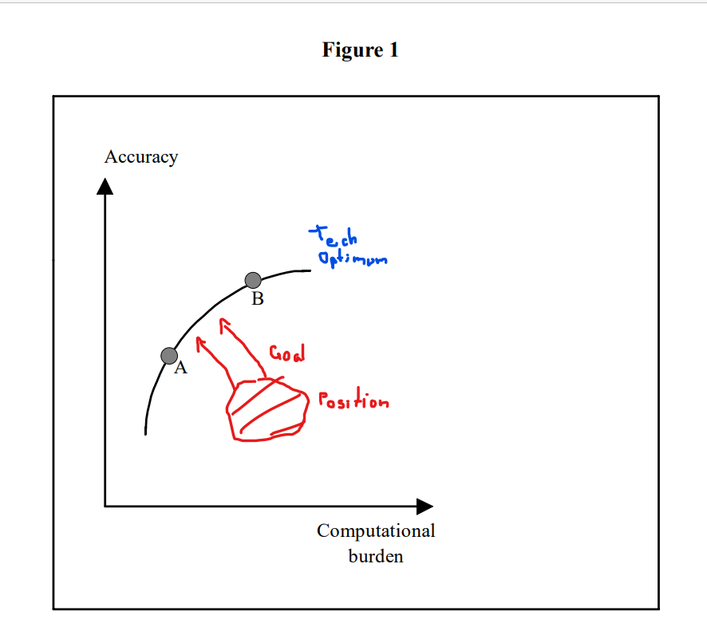

What is a Market Risk System? - Self-explaination and Goal Setting
So what is a Market Risk System?
This post tries to answer that question.
This post aims to be the guide for your intrinsic motivation for working on the system and should pose the basis for reaching higher goals in your work.
It is important to have goals in life.
It is the same as in the field of mathematics. People say that once you have a proper problem definition you are half-way through the problem, everything else is sequential.
So let's define and let's hope then everything will be sequential then.
On a general overview
In order to proper understand what a market risk system is, I like the following paper.
Even if it is from 1997, I must say that the general idea of the paper is still very valid.
Most important take-away points - Fusion with personal experience
On a system in Motion
I like it the dynamic idea that the paper gives - already from the abstract the point is clear:
Technical progress will make this tradeoff more favorable over time, leading firms to implement more accurate methodologies, such as full revaluation of nonlinear positions. The current and likely future improvements in risk management information systems make feasible new ways of collecting aggregate data on firms' risk-taking activities.
So this is your first important take-away: never think the system as static.
Embrace the modern technological advances and the cloud-native software development movement in order to push the boundaries of your system to the technological natural barriers.
On a conservative mind-set
I like as well a lot the point made in the first chapter. This is very true. From a technological view-point the system is not even super-complex. There are much more data-heavy and involving systems around. However, what is challenging is the essential complexity of Market Risk. Trust me to properly understand the internal capital modeling of a large insurance is not a trivial task.
Add on the top of it, the history of the industry that is causing a very traditional mindset that makes the companies very resistent to a full appreciation of the power of modern IT architectures and you soon will realize the difficulty of setting up a state of the art risk system in the industry.
People working in the industry are very clever. They see the tech-advances and they realize the world is changing. Still they are very well aware that at the end their core-business is finance. In this sense I think that, at least to some degree, the focus is not to waste too much energies in developing the most advanced risk system being always up to date with the latest technological trend. At least not if in terms of output there is no tangible benefit for the risk capturing mechanism and no added value across the investement management value chain.
For instance, there is little interest if the system takes 1-2 days for running the entire simulations or 2 h. Do you save lots of money doing it? No. Does the migration involve risk? Yes. Does the migration involve costs and bounds resources for a longer period of time? Yes. Well… then you see that is tough for the management to give the green light to such a shift given the complexity of the project and the fact that there is little interest for them to have a super fast state of the art system.
So this is the general field you are playing in. On the one hand, it might be a bit demotivating for a person always interested in the last technological advances. On the other hand, it is interesting cause there is a lot to do and I believe that once you will grow your skills and gain confidence from the management by delivering successfull projects the management will allow yourself more room as they will trust your judgment relating to the second point:
- Does the migration involve risk? Yes - but I am confident we can do it in a smooth way.
as a reality.
On a trade-off
Of course there are different trade-offs when designing your market risk systems.
Depending on the types of instruments that your business deals with you might have risks that are more difficult to price and requires more heavy computational efforts.
Think in this sense about complex derivatives with particular pay-offs.
On the top of it your market risk model might use stronger and more rigid assumptions such as the delta-normal also called the J.P. Morgan RiskMetricsTM methodology or more flexible approaches such as the full revaluation Monte-Carlo approaches mentioned in the paper.
It is obvious then that you have a trade-off of accuracy vs. complexity of the system and you as a company have to decide where to position yourself on that curve.
Note that you would ultimately see the curve trade-off twist in time due to the technological progress as well depicted in the paper.

This leads me to the following goal-setting for myself in the industry.
Goal-setting
So your goal in this industry is to keep up with the technological change in order to stay always on the current line given the techonological progress.
We all know that due to the budget constrains, mind-set constrains, limited amount of time and the continuously moving curve - at a very high speed recently - it will be impossible to always lie on the line.
Make sure at least that you are not to far off that line and convince your people by example that it is possible to stay close to the line with the correct attitute.
Quite challenging but that will be the goal.